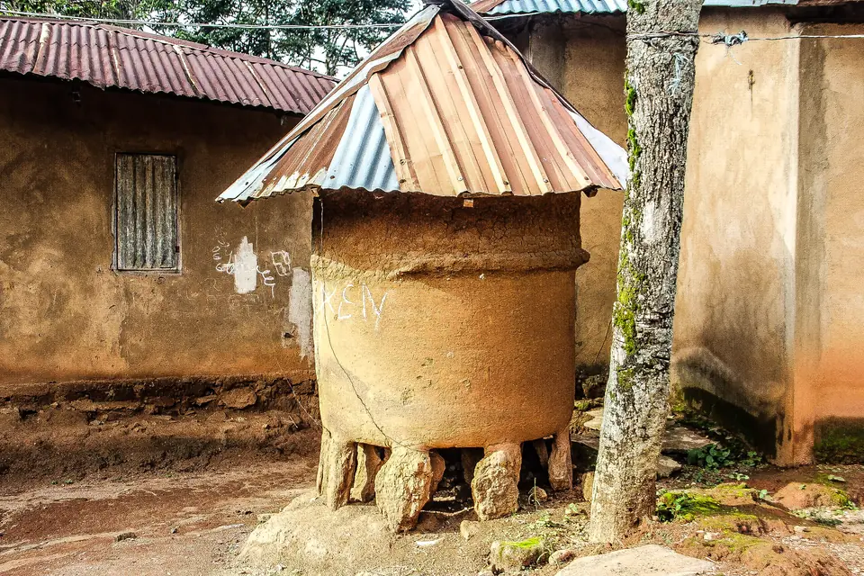
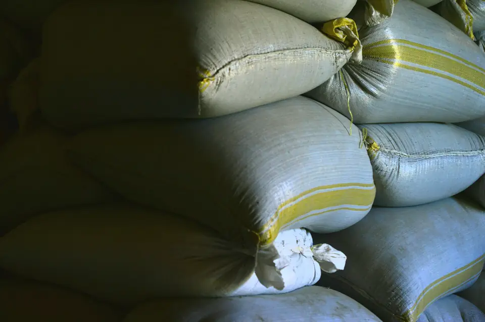

A planned network of agro hubs supporting commodity aggregation, storage, post-harvest handling, and connections to processors and markets.
For: Farmers, cooperatives, processors and infrastructure partners
Bringing commodities together to improve access to processors and markets.
Storage capacity that protects quality and lets farmers time their sales.
Enabling services that link production to processing and trade.
Much produce is still stored in small household silos or sold straight after harvest at low prices. Organised aggregation and storage protect quality and let farmers sell when prices are better.


Illustrative photos, not Misalta hubs. See photo credits.
Pick the description that fits you. Each one leads straight to the right next step.
Use the form below, email us or message us on WhatsApp. A few lines is enough.
The Misalta Agro Hubs team reads every enquiry and comes back to you directly.
From site development and financing to supply and offtake.
These locations are proposed in our planning. They are not yet operating hubs.
Misalta Agro Hubs is overseen by the Misalta Global board and key directors, with financial, agricultural and legal advisers, the same leadership behind every business in the group.
Not yet. Misalta Agro Hubs is planned, and the locations shown are proposed in our planning.
Proposed locations are in five Taraba LGAs: Jalingo, Gashaka, Bali, Lau and Kurmi.
Aggregate commodities, store them to protect quality and timing of sales, and provide post-harvest handling and logistics links to processors and markets.
Through infrastructure finance, programme partnerships or site development. Make an enquiry and the team will reply within two business days.
Farmers, processors, government and financiers: tell us how you would like to be involved.
Prefer a guided start? Use the three-step form on our Contact page →